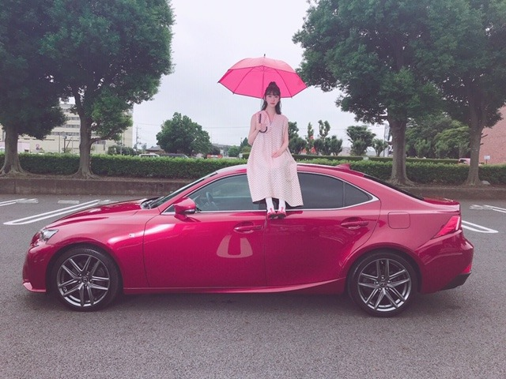

2019/0813Tue窓の景色は
路面電車の街
のMVが公開されました！
https://youtu.be/vUTmAHhAaEY
監督は山岸聖大さん！おひさしぶりでした！
ほっぺむぎゅ。
22歳で、学生役。ドキドキ
無邪気に走り回ってたりケラケラ笑っていて、自分でも自分を見て、おぉ楽しんでるなって。笑
あと車の上にも乗っちゃってます☺︎

映像がとても綺麗で、何回も何回も見てほしいな。
おすすめシーンは帰りの駅のホームでヒカリちゃんとパッと見つめ合うシーンです。
一瞬だけど、憧れや切なさや温もりやもどかしさ色んな気持ちが詰まっていてお気に入りシーンになりました
あとね、山岸監督がホットギミック を観てくださったみたいで合間にホットギミック のお話しができて凄く嬉しかったです✨嬉しいなぁ
感想聞かせてください☺︎
明日は京セラドーム2daysです！
久しぶりのライブがんばります〜
メンバーに会うのも皆さんに会うのも楽しみ
では☺︎
2019/08/13 18:30
コメント(340)
みおな、ブログ更新ありがとう＼(^o^)／
路面電車の街のMV観たよ(^-^)v
凄く懐かしい感じと、哀愁を感じるMVに思えたよ
(*^^*)
切ない気持ちにもなったよ！
みおなのお気に入りシーン見返したよ！
とても素敵なシーンだね(≧▽≦)
凄くいい表情してた！
大阪公演2days楽しんでね(^ー^)
では(*￣∇￣)ノ
路面電車の街のMV観たよ(^-^)v
凄く懐かしい感じと、哀愁を感じるMVに思えたよ
(*^^*)
切ない気持ちにもなったよ！
みおなのお気に入りシーン見返したよ！
とても素敵なシーンだね(≧▽≦)
凄くいい表情してた！
大阪公演2days楽しんでね(^ー^)
では(*￣∇￣)ノ
台風心配ですね！
無事開催されるといいけど。
９月１日のライブ・ビューイング応募しました！
よく考えたら、桜井キャプテンの卒業の日ですね。
当選して、見に行けますように！！
次のキャプテンは、未央奈がふさわしい？と
思います！
無事開催されるといいけど。
９月１日のライブ・ビューイング応募しました！
よく考えたら、桜井キャプテンの卒業の日ですね。
当選して、見に行けますように！！
次のキャプテンは、未央奈がふさわしい？と
思います！
ほっぺむぎゅのホント天使！♪
可愛い過ぎて卒倒しそう！
学生役はまだまだイケるね！
可愛い過ぎて卒倒しそう！
学生役はまだまだイケるね！
車の上に乗っちゃってるね？
車見たことない人に「先車乗ってて」
って言ったらそんな事になってそう


車見たことない人に「先車乗ってて」
って言ったらそんな事になってそう
四人目の女の子は誰ですか？気になります
MVみたよ〜
車に乗ってるシーンの服おしゃれで可愛かった♡
車に乗ってるシーンの服おしゃれで可愛かった♡
ライブ楽しみ！
台風吹っ飛ばして！
台風吹っ飛ばして！
未央奈ちゃん♪こんばんは＼(^o^)／
ほっぺむぎゅ可愛い(//∇//)
MV見るね(≧∇≦)
未央奈ちゃん凄く可愛い(//∇//)
京セラドーム頑張ってね！
楽しんでね(≧∇≦)
未央奈ちゃん神推し
秀喜より！(≧▽≦)
ほっぺむぎゅ可愛い(//∇//)
MV見るね(≧∇≦)
未央奈ちゃん凄く可愛い(//∇//)
京セラドーム頑張ってね！
楽しんでね(≧∇≦)
未央奈ちゃん神推し
秀喜より！(≧▽≦)
路面電車の街のMV、今から見てくるね！
未央奈ブログ更新ありがとう！
MV2曲同時に公開されたね！
路面電車の町のMVめっちゃ良かったよ！
制服姿の未央奈も良かったし、車の上に乗るっていうのがめったにないことだよね！
路面電車のMV何回もみて握手会で感想伝える！
明日からのライブ頑張ってね！
またコメントするね！
MV2曲同時に公開されたね！
路面電車の町のMVめっちゃ良かったよ！
制服姿の未央奈も良かったし、車の上に乗るっていうのがめったにないことだよね！
路面電車のMV何回もみて握手会で感想伝える！
明日からのライブ頑張ってね！
またコメントするね！
未央奈、ブログ更新ありがとう！
MV見たよー！！
めっちゃ良かったー！！
明日からのライブめっちゃ楽しみです！！
2日間おもいっきり、楽しみます！！
MV見たよー！！
めっちゃ良かったー！！
明日からのライブめっちゃ楽しみです！！
2日間おもいっきり、楽しみます！！
未央奈ちゃん、こんばんは
明日から京セラドームだね。
さぁ、目一杯楽しむぞー
でも台風が心配だなぁ。
明日から京セラドームだね。
さぁ、目一杯楽しむぞー
でも台風が心配だなぁ。
初日のLIVE行くよー！
1番前から応援してるねー！
1番前から応援してるねー！
路面電車の街のmv見ました！
楽曲の優しくも切ない雰囲気と、淡く儚い青春時代を描いた映像がとてもマッチしていて胸がキュッとなりました。
素敵な曲に参加してくれてありがとう！
また見返します^ - ^
楽曲の優しくも切ない雰囲気と、淡く儚い青春時代を描いた映像がとてもマッチしていて胸がキュッとなりました。
素敵な曲に参加してくれてありがとう！
また見返します^ - ^
更新有難う！
御疲れ様でした！
とても可愛い。
何時も頑張って下さい、
常に必ずしても応援しています。
どうか御身体に気を付けて下さい！
ずっと大好き！

御疲れ様でした！
とても可愛い。
何時も頑張って下さい、
常に必ずしても応援しています。
どうか御身体に気を付けて下さい！
ずっと大好き！
未央奈～～～～～。最近、更新してくれる回数が多くて嬉しく思います。
ほっぺむぎゅ。かわゆす。
今日、メチャクチャ暑かったぁ。溶けるかと思った。未央奈も京セラで溶けないでね。
がんば。神宮もう少しだ。楽しみ♪
じゃぁ。
ほっぺむぎゅ。かわゆす。
今日、メチャクチャ暑かったぁ。溶けるかと思った。未央奈も京セラで溶けないでね。
がんば。神宮もう少しだ。楽しみ♪
じゃぁ。
とても感動しました。また見たいです。
もちろんMV見ました☺︎
みんなかわいいし、ストーリーも感動的でめっちゃ好き〜♡
何回も見ます！！
みんなかわいいし、ストーリーも感動的でめっちゃ好き〜♡
何回も見ます！！
だいすきかわいいだいすき
未央奈さん、こんばんは！
ほっぺむぎゅ
かわいい(^_^)
路面電車の街
MVみましたよ～
学生役イケてます！
感情表現の上手さに
グッときました
ライブ頑張って下さいな
ほっぺむぎゅ
かわいい(^_^)
路面電車の街
MVみましたよ～
学生役イケてます！
感情表現の上手さに
グッときました
ライブ頑張って下さいな
ブログ更新ありがとー！
「路面電車の街」すごい映像が綺麗で、設定も良くて大好きなMVになりました。
未央奈さんの学生姿めっちゃ可愛かった！まだまだいけますよ笑
夜明けまで強がらなくてもいいのMVでは未央奈はんの笑顔があまり見られなかったけど、このMVではたくさん見られて本当に好きだなって思いました笑
明日大阪のライブですね。私は行けないけど、台風が温帯低気圧に変わることを願ってます。
体調には気をつけて頑張ってくださいね！
大好き
「路面電車の街」すごい映像が綺麗で、設定も良くて大好きなMVになりました。
未央奈さんの学生姿めっちゃ可愛かった！まだまだいけますよ笑
夜明けまで強がらなくてもいいのMVでは未央奈はんの笑顔があまり見られなかったけど、このMVではたくさん見られて本当に好きだなって思いました笑
明日大阪のライブですね。私は行けないけど、台風が温帯低気圧に変わることを願ってます。
体調には気をつけて頑張ってくださいね！
大好き
ブログ更新ありがとう！
明日明後日ライブ行くよ〜（＾Ｏ＾）楽しみ！！
明日明後日ライブ行くよ〜（＾Ｏ＾）楽しみ！！
堀ちゃんこんばんは。綺麗な映像と曲でしたよ。早くCDがほしい。明日から京セラなんやね。またあの感動を味わいたい。長崎人の自分は9月1日のライブビューイングに申し込んだよー。
明日から怪我にも気をつけて頑張ってね！！
お疲れ様です！
明日から怪我にも気をつけて頑張ってね！！
お疲れ様です！
MV見ました
すごいかったです
映像もストーリーに合った
3人の表情も！！
最後は玲香さんの
時々思い出してくださいぐらい
感動深かったです
すごいかったです
映像もストーリーに合った
3人の表情も！！
最後は玲香さんの
時々思い出してくださいぐらい
感動深かったです
更新待ってました！！
MV見たよ！めっちゃ良き！
しかも大好きな3人
めっちゃ見てるよ！
LIVE行くよ〜
未央奈ちゃん大好き
次の更新待ってます
MV見たよ！めっちゃ良き！
しかも大好きな3人
めっちゃ見てるよ！
LIVE行くよ〜
未央奈ちゃん大好き
次の更新待ってます
ちょっと、聞いてよ
僕は初期から乃木坂が大好きで
モバメが始まった頃から
全メンバーのモバメ取ってて
一言一句残らずにスマホに保存して
あったのにデータ消してしまった。。。
ショック過ぎて今夜眠れそうにない
何とか復活させる方法はないのかな。。。
というかどうやって消したかも
わかんないわ(´･ω･`)
こんな僕を憐れに思うなら
可愛いモバメ送ってください
僕は初期から乃木坂が大好きで
モバメが始まった頃から
全メンバーのモバメ取ってて
一言一句残らずにスマホに保存して
あったのにデータ消してしまった。。。
ショック過ぎて今夜眠れそうにない
何とか復活させる方法はないのかな。。。
というかどうやって消したかも
わかんないわ(´･ω･`)
こんな僕を憐れに思うなら
可愛いモバメ送ってください
未央奈ちゃんこんばんは‼ありがとうございます‼楽しみにしてます！ありがとうございます！頑張ります‼頑張って下さい。すいません
MV観たよぉ〜!
切ない感じがして、ジーンとしちゃった
大阪2days 行っちゃうよぉ〜！
台風なんかに負けないぞp(^_^)q
切ない感じがして、ジーンとしちゃった
大阪2days 行っちゃうよぉ〜！
台風なんかに負けないぞp(^_^)q
MV可愛かった！
これからも頑張ってください
これからも頑張ってください
堀ちゃんお疲れ様です！
ブログの更新頻度が高くてとても嬉しいです！
22歳で学生役だなんて全然違和感ないですよ！むしろ似合ってます！
大阪公演2days頑張ってください！！
お写真とても楽しみにしてます！
ブログの更新頻度が高くてとても嬉しいです！
22歳で学生役だなんて全然違和感ないですよ！むしろ似合ってます！
大阪公演2days頑張ってください！！
お写真とても楽しみにしてます！
今晩は!未央奈ちゃんブログ更新ありがとうございます!
明日以降台風が西日本に接近若しくは上陸する恐れも有ります!
明日以降最新の台風情報に十分注意して下さい!
明日も暑くなる事が予想されると思います!
呉々も熱中症には十分注意して下さい!
大阪でのツアー楽しんで下さい!
水分補給や塩分補給も忘れない様に!
それでは9月の握手会でお会いしましょう!
路面電車の街感動しました!
お休みなさい!
未央奈ブログ更新ありがとう！
ほっぺむぎゅ可愛い！
路面電車の街のMV見たよ。
高校生役も可愛かった。未央奈は本当に制服似合うよね。楽しそうな未央奈も好き！
車の上に座ってるのもちょっと不思議で綺麗だった。
ヒカリちゃんと見つめ合うシーン良いよね。二人の親しさを感じさせるような綺麗な映像。
すごく個人的なことなんだけど、このMV見ると僕の好きだった同級生の女子が死んじゃったことを思い出して泣いちゃう。
山岸監督とホットギミックの話できて良かったね。ホットギミックがこれからの映像の世界に影響を与えるような重要な作品になったらいいな。
この薄ピンクのワンピース似合ってて可愛い！お姫様感！
明日明後日のライブ頑張ってね！行けないけど応援してるよ！
では！
ほっぺむぎゅ可愛い！
路面電車の街のMV見たよ。
高校生役も可愛かった。未央奈は本当に制服似合うよね。楽しそうな未央奈も好き！
車の上に座ってるのもちょっと不思議で綺麗だった。
ヒカリちゃんと見つめ合うシーン良いよね。二人の親しさを感じさせるような綺麗な映像。
すごく個人的なことなんだけど、このMV見ると僕の好きだった同級生の女子が死んじゃったことを思い出して泣いちゃう。
山岸監督とホットギミックの話できて良かったね。ホットギミックがこれからの映像の世界に影響を与えるような重要な作品になったらいいな。
この薄ピンクのワンピース似合ってて可愛い！お姫様感！
明日明後日のライブ頑張ってね！行けないけど応援してるよ！
では！
素敵なMVありがとうございます。とってもいい雰囲気でした。共演された高瀬真奈さん、とてもお綺麗な方ですね。
今まで見たMVの中で1番スキな感じでした！！
電車の中ではしゃぐ未央奈ちゃんが1番お気に入りです❤︎
ライブも未央奈ちゃんらしく元気に頑張ってください！
電車の中ではしゃぐ未央奈ちゃんが1番お気に入りです❤︎
ライブも未央奈ちゃんらしく元気に頑張ってください！
ブログありがとう！「路面電車の街」みたよ！最初、飛鳥ちゃんがケーキを踏まれてチョコまみれになっているのをみて、衝撃的でした。そこから花澤香菜さんの語りが入って、切ない感じなのかなって思ったけど、曲はのほほんとした感じで不思議でした。ひかりちゃんがいなくなって、みんな悲しんでいたけど、ひかりちゃんがずっとそばにいるような感じがエモすぎました。のんびりした曲の感じとは違い、演技をみてるとすごく泣ける。学生役ほんと似合うよね！！ふたりで電車に揺られているシーンや手を繋いでいるシーンは、友情とか青春を感じました。チェキで撮ったようなカットがホットギミックに似ていて、これまでのmvにない感じで、山岸監督はすごいなぁって改めて思った！別れ際もっと好きになるのmvも大好きです！！あとハーフアップが可愛すぎる！！最後の写真はディズニーシーの写真かな？みおちゃんのおしゃれなセンスに憧れる！！明日は大阪ライブがんばってね！！レコメンきくね！
ももんが
ももんが
みおちゃんブログ更新ありがとう♪
路面電車の街観たよ！感情移入して泣きそうになった
いいMVでした……まだまだみおちゃん学生役行けるね笑 だって可愛いもん\(๑´ω`๑)/
ライブで聞くのが楽しみだなー♪
明日から大阪頑張ってね´ω`)ﾉ
福岡のトゥモロー⊿
路面電車の街観たよ！感情移入して泣きそうになった
いいMVでした……まだまだみおちゃん学生役行けるね笑 だって可愛いもん\(๑´ω`๑)/
ライブで聞くのが楽しみだなー♪
明日から大阪頑張ってね´ω`)ﾉ
福岡のトゥモロー⊿
未央奈！
MV、早速見ました！
切なさと楽しさが混同してる感じで、でもヒカリちゃんは微笑ましく見守ってて。
いいMVだな〜って思いながら見てました。
車の上は、実際に乗ってるのか笑
絶対にそんな経験できないよね〜笑
今日の夜行で実家に帰って、明日明後日と京セラ行きます！
台風がヤバそうですが…
台風を吹き飛ばす勢いで楽しみたいと思います！
MV、早速見ました！
切なさと楽しさが混同してる感じで、でもヒカリちゃんは微笑ましく見守ってて。
いいMVだな〜って思いながら見てました。
車の上は、実際に乗ってるのか笑
絶対にそんな経験できないよね〜笑
今日の夜行で実家に帰って、明日明後日と京セラ行きます！
台風がヤバそうですが…
台風を吹き飛ばす勢いで楽しみたいと思います！
制服まだまだ余裕っすわ～
大阪公演もふぁいとです！！
大阪公演もふぁいとです！！
MVまだ、見てないのでこれから観ます。
車の上に乗っている未央奈ちゃん、
リカちゃん人形みたいで可愛い最高。
ワンピース似合って可愛いさすが未央奈ちゃん。
京セラドーム２日間台風に負けないライブ、
頑張ってほしいー応援します。
ブログ更新ありがとー
車の上に乗っている未央奈ちゃん、
リカちゃん人形みたいで可愛い最高。
ワンピース似合って可愛いさすが未央奈ちゃん。
京セラドーム２日間台風に負けないライブ、
頑張ってほしいー応援します。
ブログ更新ありがとー
｢路面電車の街｣のMV見るたびに感動しました。
観ました。
映像の内容が気になって見入ってしまいました。
見終わってから思いましたが、あれは路面電車ではなかったですよね。
(^ー^)
映像の内容が気になって見入ってしまいました。
見終わってから思いましたが、あれは路面電車ではなかったですよね。
(^ー^)
未央奈～♪
路面電車の街、MV観ましたよ！
すごいよかった☺️
泣けました～！
未央奈はやっぱり激かわでした！！
あと玲香ちゃんのMVも観まして、泣きました！
感動するね！！
明日から大阪でライブだね♪
台風に負けないようにがんばってね！
私は神宮を楽しみにがんばるね！
チケット発券してきたんだけど、始めて行くのでいい席なのか分からないや～！
でも多分見えそうだから楽しみにしてるね❤️
体に気をつけてね♪
路面電車の街、MV観ましたよ！
すごいよかった☺️
泣けました～！
未央奈はやっぱり激かわでした！！
あと玲香ちゃんのMVも観まして、泣きました！
感動するね！！
明日から大阪でライブだね♪
台風に負けないようにがんばってね！
私は神宮を楽しみにがんばるね！
チケット発券してきたんだけど、始めて行くのでいい席なのか分からないや～！
でも多分見えそうだから楽しみにしてるね❤️
体に気をつけてね♪
未央奈やっぱりかわいい〜
MVめっちゃよかったよ！
かわいすぎで今日も癒されました
MVめっちゃよかったよ！
かわいすぎで今日も癒されました
電車の中でつり革を握りはしゃぎながら笑顔になるシーンは、言わずもがな未央奈ちゃんの魅力のひとつです。未央奈ちゃんの無邪気さは人を安心させる力があるのかも…素人目線で恐縮ですが相対する俳優さんの魅力も引き出しているように見受けられました。あとは、ヒカリさんが3人の写真を撮る直前の無防備な未央奈ちゃんの表情が個人的には愛らしいなと思いました。ではまたね…
みおな、こんばんは。更新ありがとう！ 近況報告ありがとうございます。 京セラドーム２日間楽しんでください。 では、毎日みおなに良いこと沢山ありますように！ おやすみおな！！
未央奈ちゃんこんばんは！
路面電車のMV見たよ✨髪型と服装可愛かった どこか懐かしい曲だなと感じられる良い曲だね。明日から大阪のライブ楽しんでね✨台風が来てるから気をつけてね。
路面電車のMV見たよ✨髪型と服装可愛かった どこか懐かしい曲だなと感じられる良い曲だね。明日から大阪のライブ楽しんでね✨台風が来てるから気をつけてね。
こんばんわ！
MVよかったよー！！
ほっぺむぎゅしたい～！！笑
実は明日、明後日ライブ初参戦です！(やっと当たった)
愛媛から遠征します！！
てか、もう大阪で待機してるんだよね！！
台風が心配だけど、未央奈ちゃんに会えるの楽しみ！！
スタンド席だけどね、、、
全力で未央奈ちゃん応援するね！！
MVよかったよー！！
ほっぺむぎゅしたい～！！笑
実は明日、明後日ライブ初参戦です！(やっと当たった)
愛媛から遠征します！！
てか、もう大阪で待機してるんだよね！！
台風が心配だけど、未央奈ちゃんに会えるの楽しみ！！
スタンド席だけどね、、、
全力で未央奈ちゃん応援するね！！
ライブ頑張れー
ほっぺむぎゅがかわいすぎる！


未央奈の事めっちゃ好きだからこれからもがんばって！！